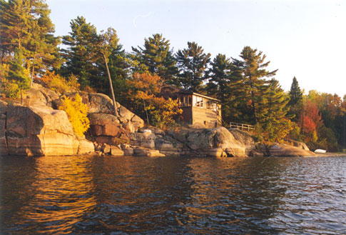

Georgian Bay Living
Situated on the granite shoreline of Georgian Bay, facing the Killarney Ridge of the South la Cloche Range, Shebanoning Lodge and Killarney Cabins welcome you to a quiet and peaceful retreat from which to experience the beauty of the Killarney Area.
The Lodge and cabins are located on a secluded bay on the south shore of Pine Island Channel, midway between the town of Killarney and the Provincial Park Boundary. It is accessible by car from Highway 69 and Highway 637, or by boat from Killarney Bay. It offers comfortable accommodation in a spectacular setting--an ideal place to enjoy the beauty of nature in a quiet and peaceful environment. In addition to the main lodge building, there are 2 private, self-contained cabins with grand views facing the striking white quartzite mountains beyond. Each cabin has several bedrooms, a bathroom and a fully equipped kitchen.
Canadian Escape

Experience a whole different world just a 4 hour scenic roadtrip from Toronto.
Great Fishing
Enjoy the abundent fishing spots on the gorgeuos vast Georgian Bay waters.
Remote Nature
Enjoy peace of mind and no distractions, you choose the adventure
Where are we located?
Killarney is about a 4.5 hour drive from Toronto. Take Highway 400 north to Highway 69 north.
Turn off of Highway 69 onto Highway 637. You will pass through the Provincial Park. About 8 km after the Park Gate, you will see a sign on the right that says "Speigel" (#1108).
Turn right into the property and then take the left-hand fork in the road. Proceed slowly along a dirt road until you see the deLamorandiere Rock gate. Turn right and proceed slowly to the cabins.
Book Your Perfect Escape Today!
For the past 60 years, the lodge has been a privately owned family retreat. To book the main lodge please go to www.vrbo.com/318078. Beginning in the spring of 1996, the facilities are now accessible to a limited number of guests by prior reservation only.
Whether you seek a convenient "base camp" location from which to explore the rugged beauty of Killarney Provincial Park, a "fishing camp" to hunt for bass, pickerel or trout in Lamorondiere Bay, a family cottage nestled in the pines, or just a quiet haven to enjoy the serenity of nature, Shebanoning Lodge and Killarney Cabins offer you a private yet accessible location in the heart of Killarney.